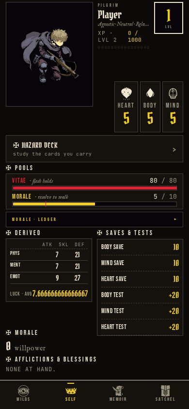
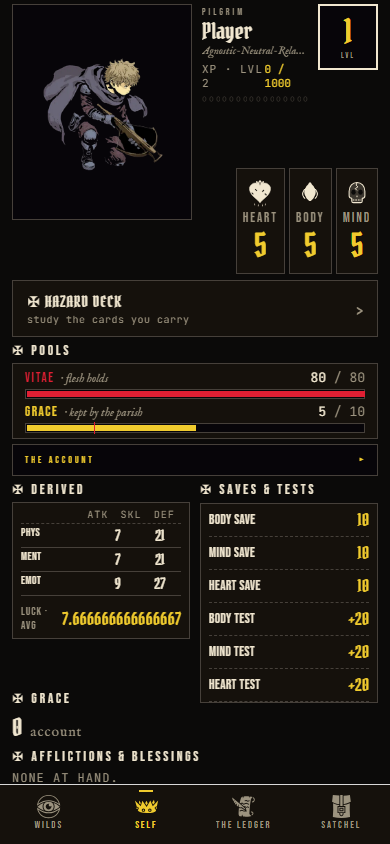
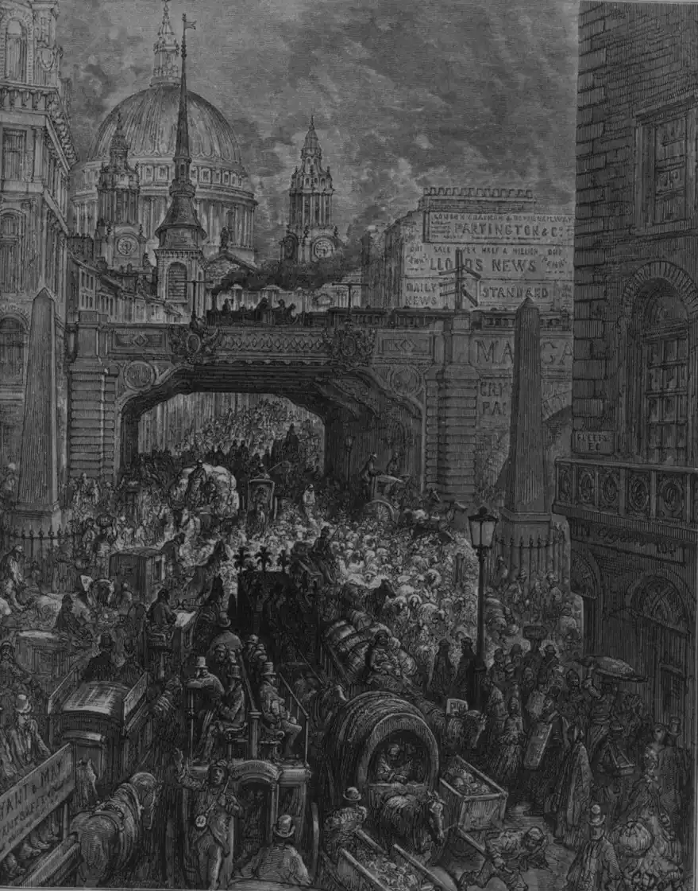
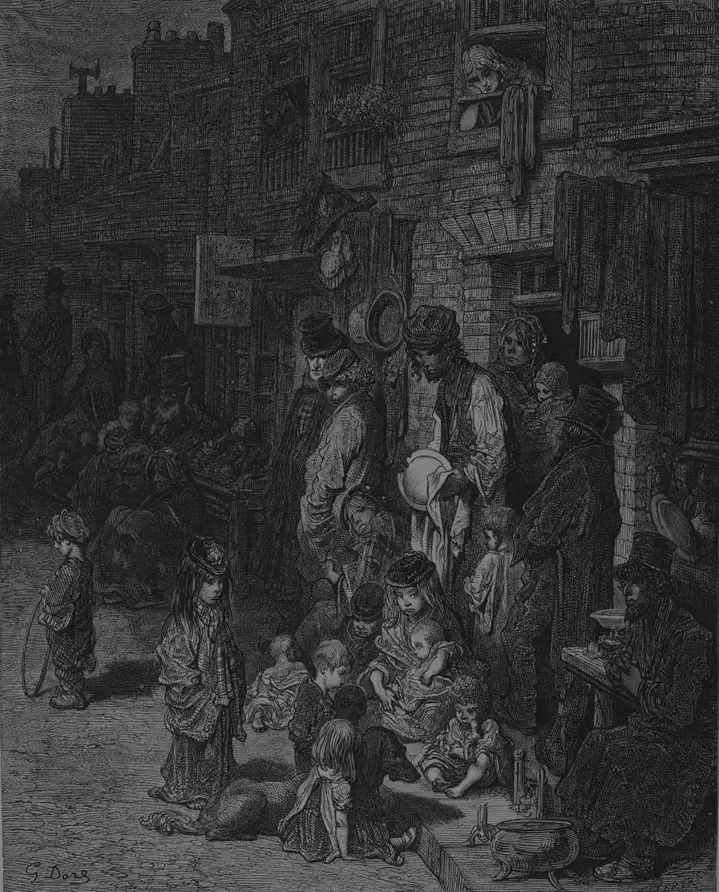
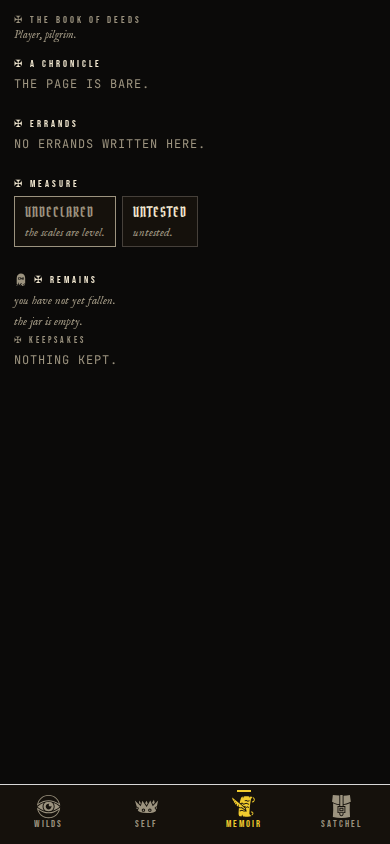
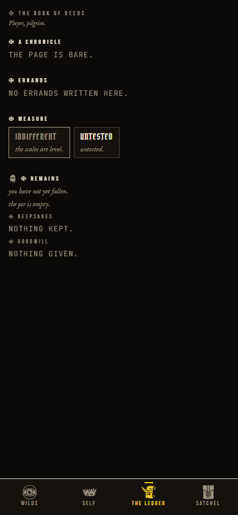
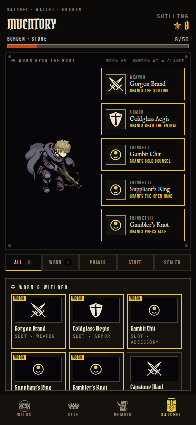
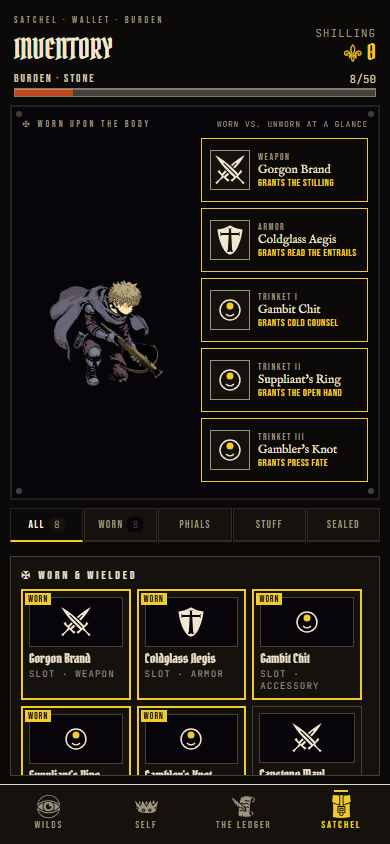

✠ The signature component
Before and after
One component, four shapes, five states. The labelled pair is the primary: it is the only treatment that answers “which one is new?” without an interaction, works with no script, prints, and reads the same on a phone as on a desk.
Primary — the labelled pair
Two plates, each captioned, the newer one framed in gold. Below 560px they stack, newest last, so the reading order stays before-then-after. A chip carries a date only where the capture manifest proves one.
BEFORE

AFTER · 29 AUG

The other two image shapes
A card plate is 3:4 and sits side by side in a tighter grid. An arena plate is 16:9 and stacks, so a wide image keeps its width.
BEFORE

AFTER

BEFORE
AFTER
Alternate — tap to swap
Same frame, both states, no drag. Tap, click, or focus and press space. It beats the wipe for small differences because the eye compares in place. With no script it renders as the pair below; the upgrade happens in the browser.
BEFORE

AFTER

Alternate — the wipe
A dragged rule reveals the new plate over the old. The most satisfying and the least honest: half of each image at all times, a thumb over the interesting part, and nothing for a reader who never drags. Rejected as primary; kept for pairs that differ everywhere at once. Arrow keys move it 5% at a time; Home and End go to the ends.
BEFORE

AFTER

The fourth shape — a rules-text pair
An affliction's before and after is its rules text. A picture of a sentence is an invented picture, so the component has a text mode: same labels, same reading order, no image.
buff cleanse minor
BEFORE
Absolved — CLEANSE — Type buff · Category special · Duration permanent
AFTER
Absolved — CLEANSE — Type buff · Category special · Duration permanent · Stacking none
The two states that are not decoration
while the plates load
The box is reserved at the capture's own ratio, so nothing below it jumps. Hatched, not spinning — the page holds still.
when there is no picture
Missing evidence is stated, never faked. An “after” is never shown twice and a neighbouring day's capture is never reused.
The alt-text rule the pipeline follows
Per image, never per pair: “The <screen> screen <before|after> the change: <the one visible difference, in plain words>.” The difference clause is taken from the work item's own what-changed line, trimmed to its first clause — never generated freshly, never “a screenshot of the app”. A pair whose what-changed line is missing does not publish an image. It publishes the sentence saying no capture exists.